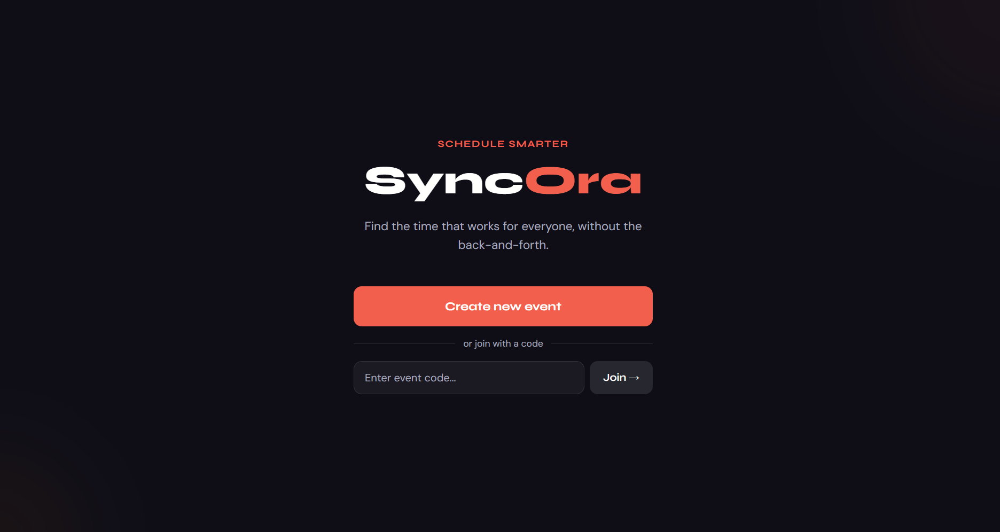

Selected Work
Projects
Research, engineering, and applied AI — built to solve real problems.

01 - HackaPrompt AI
SyncOra
find a time that works for everyone, without the endless back-and-forth. You create an event, share a short code, and participants vote on their availability. The app scores each slot automatically and highlights the best option once enough people have responded.

02 - Industrial AI Challenge
Predictive Production Planning for Manufacturing
By leveraging predictive AI models and data analytics, aimed to predict daily slitting output and optimize production management to improve operational efficiency and customer satisfaction.
03 - Service Design & Engineering
UrbanPulse: Event & Logistic Planner
An application that streamlines event discovery and logistics planning through a conversational Telegram bot interface. The system integrates multiple external APIs (Ticketmaster, OpenWeatherMap, OpenRouteService) to provide intelligent event recommendations with weather-aware transport optimization.
04 - High Performance Computing
Parallel Romberg Integration: HPC Implementation
Fine-grained image classification for 102 flower species using transfer learning and custom augmentation pipelines, achieving 94% top-5 accuracy.
05 - Computer Vision
Machine Learning Driven Android Application for Flower Identification
A machine learning-based Android application designed for real-time flower species identification from images captured using a camera or selected from the gallery.